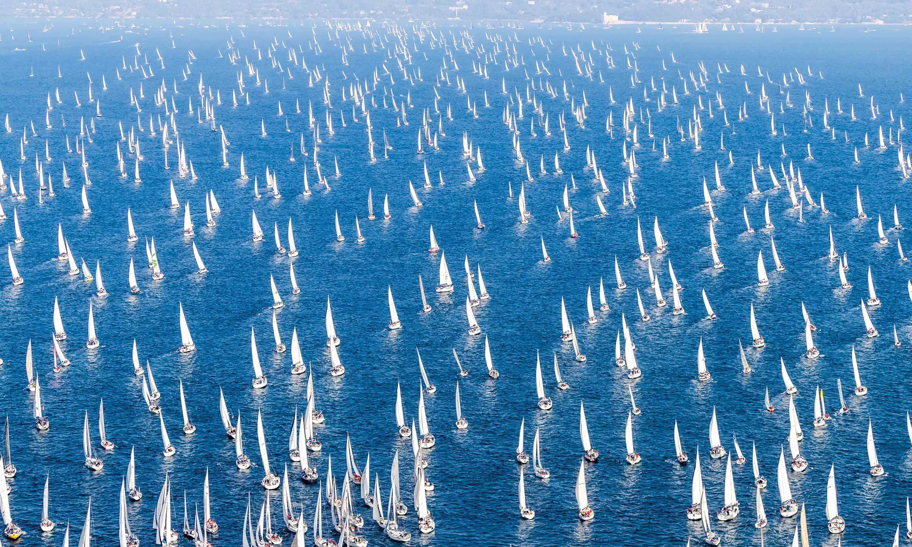

La Bora e la Barcolana
Clicca il pulsante per leggere una curiosità!
La Bora è il vento tipico di Trieste. Soffia da est-nord-est verso il mare e le sue raffiche possono superare i 100 km/h.
La Barcolana è una regata velica che si corre ogni anno nel golfo di Trieste, la seconda domenica di ottobre. Si svolge dal 1969 ed è una delle regate più affollate del mondo.


Sito web sviluppato da Omar Vidonis, studente dell'università degli studi di Trieste matricola: IN0501505